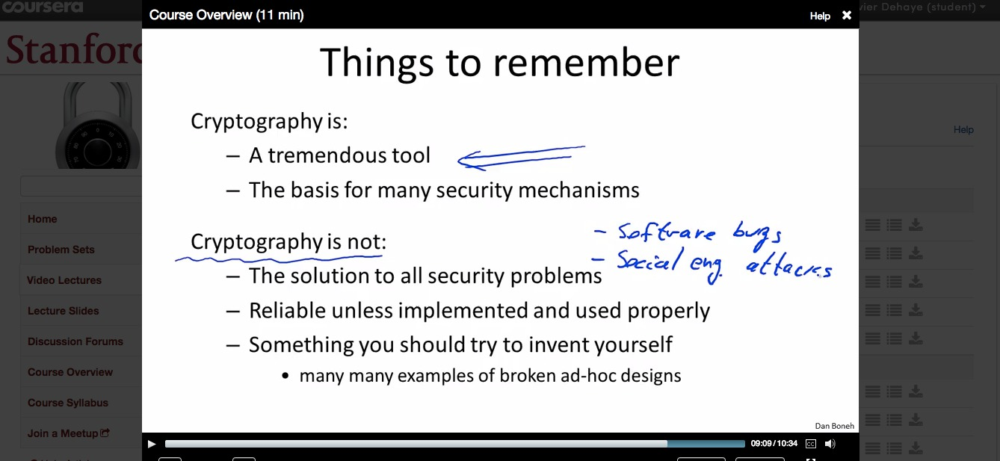

Security theater, in airports and academia
When I was in Oxford, I had the best view in the world from my apartment. Off Merton Field, above Deadman's Walk onto Christ Church Meadow. Uninterrupted grass landscape into the river, with rolling mist up to the river most mornings, Lord of the Rings-style. In fact, Tolkien's office was actually the apartment upstairs, and I like to think that it inspired him. How come, in a cramped city like this, I could enjoy this same view decades later, centuries after the construction of the building I was living in? Well, because in the byzantine world of Oxford real estate, one college (ChristChurch) owned that land, while another owned grazing rights for cattle on it (forgot which, presumably Merton itself). Not that tourists would see cattle in that field: every year, the college with grazing rights would rent sheep for just one day, and move it there. The theory was that if they didn't exercise their right, they would legally lose it, and the other college could build whatever they wanted there and ruin the view (Wikipedia mentions a road that was defeated). The pace at Oxford allowed to think this through: custom is built over centuries, and preserved with yearly activities.
Why this long preamble?
I was just in Goteborg for the #Chals14 conference, where a big part of my schpiel was that we should not succumb to the free-is-a-lie mantra of MOOCs and resist narrow views of the "Internet happening to education" (quoting George Siemens) based around technological determinism (quoting Evgeny Morozov). The afternoon session was in Swedish, so I was distracted and looking at Twitter. One person that I am following, Aral Balkan, tweeted this:
Is @schiphol airport breaking EU law? They told me today that I could not opt of the full-body scanner.
http://t.co/LfQ7k20ZLG
Via @alloy
— Aral Balkan (@aral) September 24, 2014
Balkan is a privacy advocate, who has been trying to raise the attention of people to the Spyware 2.0 model employed by many companies now: in his Orwellian view, by offering free services, large corporations manage to convince us to give away all our data, so they can spy on us. He is involved in the Indieweb and peripherially (?) in the Reclaim the Web movement, which also has declinations in the MOOC space (for instance with Known). His tweet got me pretty upset: a few years ago, Schiphol security classified a present from my mom, high quality Belgian chocolate paste, as a liquid. Back then I had checked, and legally they were, at least at the time, within their rights: individual employees have ultimate classification decision and chocolate paste is indeed a grey area. Still, because of an arbitrary decision by a person who gleefully threw away a present in the bin, I was forced to make-do with Swiss chocolate for a while, a clearly inferior proposition. If you want to dismiss my reasons to do this, you could say that I have a score to settle with Schiphol security.

As luck would have it, on my flight back to Zurich from Goteborg, I was flying through Schiphol. On the very same day as Balkan. On top, the twitter thread had a ton of links to the relevant laws and websites, which were completely unambiguous. So all the work of retesting this more "scientifically" was cut out for me. In fact, one could argue that as an academic this is part of my work: to challenge institutions, spread knowledge, and contribute to society. These last two points made by many #Chals14 participants in the context of MOOCs. I agree and generally take it seriously, especially living in a country where academic freedom is in the constitution (Art. 20), where I am paid well to think, connect dots, etc. My view of academia might smack of arrogance and overreach, but bear with me.
A few hours later, I myself landed in Schiphol, and got out of the transit area so I would have to intentionally get back through security. Since I could not print my legal backups on time, I had written on my hand the references to European regulation, 185/2010 4.1.1.10, a Dutch website URL and my plan:
- refuse body scanner twice;
- ask for an explanation of my rights;
- question the legality of their setup;
- ask for the name of the person I was talking to;
- ask to speak to a supervisor;
- iterate.
When I approached the security scanner, I looked around. Nowhere was it written that I could opt out. It was simply written that I should "feel free to ask questions". In Balkan's case, this was not helpful at all: since the security employee seems to have violated the law, Balkan couldn't just point to a sign and say he was wrong. The fact that there was no sign is, according to me, already a violation.
Before being screened by a security scanner, the passenger shall be informed of the technology used, the conditions associated to its use and the possibility to opt out from a security scanner
—European regulation 185/2010, last line of article 4.1.1.10
When I had to finally talk to a Schiphol security officer and refuse the scanner, our interaction validated all the care I put in preparing this (and my general approach to a few similar challenge-the-authority projects I am involved in): his reaction was simply to ask me "Why?", why I was refusing. If there is one thing I learned this summer, it is to ask myself "Why?" and have a good answer to this question [1]. In this case, I could definitely answer it right away: "Because this is my right". By keeping a pretense of being citizen beta, I got the officer to volunteer the reason why he himself asked me "Why?": he volunteered "because sometimes people don't have the right information and think those are X-rays machines going through their skin" (regardless of the validity of the assertion, this is irrelevant to the fact that European law still allows me to opt out). I repeated that I was still refusing, and he said that was indeed my right, let me get around the scanner and started patting me down.
To emphasize: this particular officer knew from the start that I it was my right to opt out. While being perfectly courteous, he was making assumptions of my own ignorance, expecting to enlighten me with information about his very expensive, super advanced, and ultimately useless piece of technology [2]. This explanation was supposed to somehow impress me, and lead me to willingly give away my own rights as a EU citizen (on EU soil). Given that I had gone to Goteborg to partly talk about technological determinism, with quotes of Zuckerberg on the evolving nature of privacy (including the "dumb fucks" quote, page 11 of my slides), this was adding another layer of irony... There possibly was arrogance in my assumptions about my role as an academic, but certainly there were in the assumptions the officer was making: he didn't know about the Oxford sheep (presumably), all the necessary tabs opened and ready on my laptop, the writing on my hand, or the fact that I have quite a bit of experience with EU law (in the context of a separate private matter, I have previously encouraged the European Commission to initiate an infringement procedure against my home country, Belgium. This is a highly recommended and free legal avenue, available to any European citizen and maybe even resident).
Once he had patted me down, and I had effectively gone through security, it was time to lay some of it out. Of course, I was quickly bounced around to the shift supervisor (who looked quite a bit senior). René was genuinely concerned and wanted to do the right thing: he took pictures of my screen to get the relevant EU law lines and the original tweets. I told him to look for the #HelloSchiphol hashtag on Twitter. He thanked me.
But again he dismissed Balkan as just a tweeter among others, and I had to insist that he actually had many followers who care about privacy, that he is a big shot taking on Google, etc. I shouldn't have had to do that, and neither should it have mattered that I am a university professor, yet he did remark on the fact [3]. One can argue about my method and its transparency, but by playing dumb I actually got further than just flashing legal printouts right away, since I now have one more data point on how Schiphol security officers respond to seemingly unprepared citizens concerned with airport security.
Overall, this experience with Schiphol security was very positive, and I don't have a grudge against them anymore (provided they add relevant signage).
Now I want to contrast this with another security theater incident [4], this time in the MOOC space. In September 5th talk by Audrey Watters about the Learning Management System, she says this:
The LMS was — is — designed as an Internet portal to the student information system, and much like the old portals of the Dot Com era, much like AOL for example, it cautions you when you try to venture outside of it. “ re you sure you want to leave AOL?” “Are you sure you want to leave the VLE?” “Aren’t you scared to be on the Web?” “There are strangers and strange ideas out there. Stay within the LMS! Stay within AOL!"
—Audrey Watters
There I was in Schiphol, facing the same security theater to cross an actual physical portal.
Watters might have been picking on older technologies (AOL and LMSes), but on that very same day (Sept 5th) the very same issues resurfaced for more modern technology, through Jonathan Mayer. Mayer is a lawyer, but also a PhD student at Stanford in computer science. Like Balkan, he is a big advocate for privacy.
It’s hard to come up with something that doesn’t count as market research or product improvement.
So far his research has cost Google 22.5M USD in fines, and what he has said in interviews has earned him the distinction of being labeled by the online advertising trade union a "Bolshevik of the Internet world" [5]. He is 26.
He is also teaching a course on Surveillance Law on Coursera (i.e. how the NSA, FBI, etc are legally accessing information about US citizens). A week before his course, he published a blog post detailing some security flaws of Coursera itself. This was at his personal blog, but I assume he would consider this part of his work.
Courserians, we are writing about a topic we take very seriously – user privacy.
—Brennan Saeta - Infrastructure Engineering, Coursera official blog
Coursera's response was given in a blog post. Slate has criticized that response, and smartly highlighted that any attack vector is good for a hacker. [6]
My team, Infrastructure, is taking a security class together, learning about cryptography because this is kind of relevant to security. So we try to improve ourselves and learn about best practices as well.
—Nick Dellamaggiore - Infrastructure Lead, at Coursera Partners' Conference 2014 [7]
In his talk at the Coursera Partners' Conference, Dellamaggiore has a background slide with the actual class that his Infrastructure team takes: Cryptography I, on Coursera of course, by Dan Boneh (ironically from Stanford).
I went and looked at the course. Sure enough, 9 minutes into the first video, social engineering is highlighted as nullifying the value of encryption and many other security methods. Given that Coursera superprofessors are supposed to be the best of the best, and given the way academia works, I expect a fair share of Coursera professors to be greying a bit. I want to question how the decision was made by Coursera to think those professors could be trusted with this level of access. I have had access to more information than the general public to help answer this question, but do not know enough at this time to actually answer it. I am not willing to reshare publicly the information I still have because of personal legal risk.
That's great, but how do we keep data from falling in the wrong hands, say they try to access our physical machines in the cloud or our production databases or what not. So this slide is a little bit more technical, so bear with me, I will kind of go through it quicker.
—Nick Dellamaggiore - Infrastructure Lead, a few seconds later
This lack of public transparency is itself is a concern, in the context of the Asilomar convention. Without more transparency from Coursera on their data policies, I have genuine concern that Coursera itself is just using security theater for commercial advantage [8].
In case it is not clear at this stage, I still have a score to settle with Coursera, but I try to be a patient man.
If someone’s not going to follow the practices, that’s something that society faces in general, and that’s why we have police and courts [..] In the academic world, we don’t need police and courts, but we have academic discipline, we have academic institutional standards, we have research standards. If people don’t comply with those, they do need to be deal[t] with. In our set of relationships, that’s between the university and the instructor.
—Vivek Goel, Chief Academic Strategist, Coursera and apparently also still a professor at the Dalla Lana School of Public Health and the Institute for Health Policy, Management & Evaluation
Goel is textually correct of course. But he is also intentionally misleading (by offering this generic quote in an article about a course that I ran). And he is also unintentionally short-sighted, for very many reasons. One is that he indeed reminds me of looking up the local rules.
The University of Zurich (UZH) is an institution with a strong commitment to the free and open pursuit of scholarship.
Scholarship is the acquisition, the advancement and the dissemination of knowledge in a methodological and critical manner.
To flourish, scholarship must be free from external influences, constraints and ideological pressures. The University of Zurich is committed to unrestricted freedom in research and teaching.
Academic freedom calls for a high degree of responsibility, including reflection on the ethical implications of research activities for humans, animals and the environment.
Another is that he has resorted to using innuendos. I can use my own too.
We see all the platforms now really starting to talk about the social aspects [..] of learning, which come from the other theories.
—The Zuckerberg-wannabe of the higher education world, aka the Chief-Academic-Strategist-formerly-known-as-an-academic aka Vivek Goel.
Don't worry, the nickname is based on actual data.
| [1] | Deserves a shoutout to Kate Bowles and #ccourses for reminding me of the importance of this question. |
| [2] | I claim this general technology is useless based on still unpublished research announced last month. I was unprepared to enter that debate there with the security officer, not knowing exactly which model Schiphol was using. I suspect the officer was not ready either. The point is that we shouldn't have to, as this particular European law was drafted anticipating rapid evolution in this security field, both regarding threat detection and evasion. |
| [3] | He only learned that at the very end, when I wrote #HelloSchiphol on my business card. There is, so far in my life, only one (repeated) instance where I have flashed the fact that I am a professor: apartment hunting in Switzerland, for which competition is so fierce that local society admits pretty much any move is fair. The fact that many academics pride themselves not to use business cards or Twitter show a profound lack of understanding of their own place in the physical and digital world: conversation with any other citizen is important and that might require using their medium. |
| [4] | To use the language of Bruce Schneier. |
| [5] | I will admit it, I am jealous and do hope that Mayer has that written on his business card. As I explained in this post I currently fulfill four out of five crowdsourced stereotypes about academics, and am unsure of others' perception of me on the fifth (but I know where I stand). |
| [6] | I also did at the time, in the comments to the Coursera blog post, for the fact that Coursera was not properly acknowledging the value of Mayer's work for them in testing their platform. |
| [7] | This was at the Data Privacy and Policy talk. There is a recorded version of this talk, which is not available to the general public. |
| [8] | For the inevitable straw men, I am asking for partial transparency. Let me raise you: I am not asking for Nick Dellamaggiore's formidably long password. |
Comments
Comments powered by Disqus